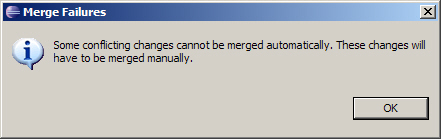

Introduction
As discussed in Part 1 of this article, a subbranch is a nice way to isolate development activity from the main branch. But sometimes changes are made to the main branch that should be incorporated into the subbranch. Such an incorporation is called a rebase, since it effectively adjusts the base point on the main branch from which the subbranch was created. Merging in the other direction, from subbranch to main branch, is called a delivery. This is how functionality from the subbranch is delivered to the main branch.As in Part 1, this article will employ a scenario of two programmers, Paul and Wing, working on separate branches of the same project. Paul will branch off the main branch and modify some files while Wing continues work on the main branch, also modifying files. There will be two differences in this second part of the article from the first part.
- Paul will synchronize his subbranch with Wing's changes on the main branch before delivery.
- Wing will perform the delivery herself, rather than Paul switching his workspace between the two branch.
After each rebase-delivery cycle, the two branches will be synchronized. In Part 1 the subbranch received none of the main branch changes. The rebase-delivery flow is diagrammed below in the scenario diagram.
The process is repeated for a second iteration to demonstrate the so-called merge-again scenario. Work continues on the branch after the first merge; then the branch is merged again later. The merge-again scenario requires that you keep track of when you last merged via tags. This will be demonstrated later in this article.
An alternative is also described that employs Eclipse's CVS Ongoing Merge support. While the method of this article does not depend upon Ongoing Merge support, it is mentioned in steps where it can utilized.
The Scenario Diagram below will be referenced throughout this article.
Setup
The sample will use a few text files inside a simple project. In order to carry out the sample yourself, you should already have a working connection to a CVS repository in your Eclipse workspace.If possible, you should considering creating a new repository for this scenario. That's because tags and branches are the central theme of this article. And unlike files in a CVS repository, the tag and branch metadata are difficult to selectively remove if you want to start over. It's much easier to just wipe-out the repository and start with a new one. With a fresh repository, be aware of issues with permissions described in the Troubleshooting section.
If you have already done Part 1 then you'll want to either start this scenario with a different repository or use different tag and branch names. Otherwise they will conflict with those used in Part 1.
The setup instructions below can be expedited through importing the brtest.zip into a simple project brtest.
- Create a new simple project called brtest.
- Add a new file called
f1.txt. Add the following contents.This file will only be edited by Paul This line will be changed later. This line will be changed after the first merge. The rest of this file will remain the same.
- Add a file called
f2.txtwith the following contents.This file will only be edited by Wing. This line will be changed later. This line will be changed after the first merge. The rest of this file will remain the same.
- Add a file called
f3trivial.txtwith the following contents.This file will be edited by Paul and Wing. This line will be changed by Paul only. This line will be changed by Paul only after the first merge. This line will be left alone. This line will be changed by Wing only. This line will be changed by Wing only after the first merge. The rest of this file will remain the same.
- Add a file called
f4conflict.txtwith the following contents.This file will be edited by Paul and Wing. This line will be changed by both Paul and Wing. This line will be changed by both Paul and Wing after the first merge. The rest of this file will remain the same.
After adding the above files to your project and checking them into CVS, your resource view should look something like the screen shot below.

Merge Method
We'll be demonstrating the rebase-delivery method of merging the subbranch into the main branch. While it requires a few more steps than the merge scenario in Part 1, it provides better synchronization of both branches and keeps most merge work off the main branch. This is illustrated in the Scenario Diagram.An alternative is to simply merge from the subbranch to the main branch without rebasing. Then the merge activity is performed on the main branch. This was the approach used in Part 1 and is fine for some cases.
Creating the Branch
At this point, Paul and Wing have the same version of all files. It is now time for Paul to create an independent branch on which to work.- Right-click on the brtest project and select Team
→ Branch .... A dialog is displayed for creating the branch and
marking the start-point with a tag (also called a Version Name).
Enter a branch name like p1test. Leave the check box checked for
Start working in the branch. Notice that a start tag is
automatically filled in for you called Root_p1test. This is the
first tag labeled in the Scenario Diagram. You
may choose a different name so long as it doesn't conflict with an
existing CVS tag. This will mark where the branch was created. It will
be used later by the merge editor to determine what has changed since
branch creation. Click OK.
Since you checked the box to start working in the branch, your workspace should already be configured to work in the branch. You can verify this in two ways. By right-clicking the project and selecting Properties and then CVS, you should see the p1test in the tag field. If you have the CVS label decorations enabled, you'll see the branch tag in the navigator view (see below).

![[Note]](images/tip.gif)
To enable CVS label decorations, go to Window → Preferences and navigate to General → Appearance → Label Decorations. Check the 'CVS' box. - This step begins the work represented as the blue box labeled
PD1 in the Scenario Diagram. Paul will
modify the first file using the p1test branch. Open the editor
for
f1.txt. Change line 3 from "This line will be changed later" to "This line changed in iter1." Save the change. - Open the editor for
f3trivial.txt. Change line 3 from "This line will be changed by Paul only" to "This line changed by Paul in iter1." Save the change. - Open the editor for
f4conflict.txt. Change line 3 from "This line will be changed by both Paul and Wing" to "This line changed by Paul in iter1." Save the change. - Right-click on the brtest project and select Team
→ Synchronize with Repository. In the Outgoing Mode view,
right-click the brtest project folder and select Commit.
Enter a comment such as "First iteration changes made by Paul." Note
that for files that have changed, the revision numbers are four digits.
This is a CVS convention for branched revisions.
This commit is represented by the first red circle on the p1test branch of the Scenario Diagram. Now it is Wing's turn. Her work is represented in the Scenario Diagram by the blue box labeled WD1.
- Wing will make her changes in the main branch. In her
workspace she connects to CVS as "wing" to checkout the brtest
project from CVS.
She chooses the brtest under HEAD, the moniker CVS uses to designate the main branch.
Since Wing has the main branch loaded into her workspace, she doesn't need to perform a branch change. As Wing, begin editing
f2.txt. Change "This line will be changed later" to "This line changed by Wing in iter1." Save the change. - Edit
f3trivial.txtin Wing's workspace. Change line 9 from "This line will be changed by Wing only" to "This line changed by Wing in iter1." Save the change. - Edit
f4conflict.txtin Wing's workspace. Change line 3 from "This line will be changed by Paul and Wing" to "This line changed by Wing in iter1." Save the change. - Commit Wing's changes with a comment like "First iteration changes by Wing". Note her revisions numbers are all two digits (e.g. 1.2). That's because her new revisions occur on the main branch. This commit is represented by the first red circle on the main branch in the Scenario Diagram.
- Wing is finished development for this iteration. So she will tag this milestone with W1. Right-click the
brtest project and select Team → Tag as Version ....
In the dialog that arises, enter W1 for the tag name and click OK.
This corresponds to the W1 tag in the Scenario
Diagram.
To to verify a tag was created, change to the CVS Repository view and expand Versions → brtest. The W1 tag should be visible.
The Merge
Now it is time for Paul to merge Wing's changes from the main branch into the p1test branch.- Since a merge has the potential to get ugly, it's a good idea to tag the completion of work labeled PD1 in the Scenario Diagram. In Paul's workspace, which is still pointed to the p1test branch, add the P1 tag in the same manner that Wing added W1 earlier.
- We begin the rebase by right-clicking the brtest
project and selecting Team → Merge.
Click Browse for the end-tag field and select HEAD. This represents the main branch.
In the start tag field, click browse and select Root_p1test from the list of tags.
An alternative to using the browse button each time is to summon the Content Assist in either of the end or start tag fields with the Ctrl + Space Bar keys while the cursor is in the field.
As for the rest of the panel, select Preview the merge in the synchronize view to take advantage of Eclipse CVS support for resolving merge conflicts. Also check Merge non-conflicting changes and only preview conflicts. Otherwise we will have to merge the non-conflicting changes manually. We will use these settings for all our merges in this article.
- Click Finish. You should see the following message.

This is not as dire as it might seem. It just means there are conflicts we have to resolve. Click OK to continue.
- This is where the fun begins. You will be presented with the
following Synchronize view.
Note that only the conflict appears. The trivial merges were performed automatically as can be seen by the change markers in front of files f2.txt and f3trivial.txt in the Navigator view.
Opening f3trivial.txt shows that indeed the automatic merge does the right thing when the same line isn't changed by separate parties.
As for the conflict, double-click f4conflict.txt in the Synchronize view. The conflict editor displays the following.
- The problem is the line highlighted in red. Both Paul and Wing
changed it. There is no way for the automatic merge mechanism to
determine what to do. (In some cases, even humans have a hard time.) In
this case, we determine the line should read
This line changed by Paul and Wing in iter1 during merge.
Change this in the left-hand side of the conflict editor. The left-hand side is effectively a text editor. The right-hand side is a read-only view of the other conflicting party.Right-click the left-hand editor and choose Save once the change is made.
Now would be the time to pin the Merge Synchronization view in order to take advantage of the Ongoing Merge support provided by Eclipse. This feature is described as an alternative at the end of this article. - Even after the save, the entry in the conflict editor remains
red. That's because from the Eclipse SCM perspective, there is still a
conflict. It's just a conflict with some extra changes. We have to
explicitly inform the Eclipse SCM that we have indeed resolved the
conflict and that from this point onward, the changes to the local copy
should be interpreted relative to the contents of the left-side.

This is done by right-clicking the file in the Synchronize view and selecting Mark as Merged. Do this now and notice there are no more conflicts.
In Eclipse 3.3, the Mark as Merged action is also available from the context menu of the compare editor. This completes the merge labeled M1 in the Scenario Diagram.
- Commit the changes with a comment such as "Merged HEAD into brtest for iteration 1."
- A successful merge is an important milestone. Tag this version with PM1 to correspond with the label in the Scenario Diagram.
- Wing will now perform the merge from brtest to the main
branch since she owns the main branch. The version tagged PM1
contains all the work from PD1 and WD1 plus whatever
merge work was necessary in M1. The M1 modifications may
conflict with her contents at W1. But this is fine since M1
was a conflict resolution.
In Wing's workspace, which is still pointing to the main branch, right-click on brtest and select Team → Merge ... .
- The merge dialog should be familiar by now. Browse for p1test for the end tag. This automatically populates the start tag with Root_p1test. Be sure to check Merge non-conflicting changes.
- Click Finish on the merge dialog. The resulting
conflict is expected since the resolution in M1 was different
from both the P1 and W1 versions.
Pin this synchronization view if you wish to take advantage of Eclipse's Ongoing Merge support.
- Right-click the f4conflict.txt in the Synchronize view and select Overwrite. This overwrites the working copy of the main branch with the properly merged copy from the brtest branch. This will remove the conflict marker.
- Commit the result of the merge into the main branch with a comment like "Merged the rebase results from brtest."
- Tag this result with WM1. This corresponds to the WM1 tag in the Scenario Diagram.
Merge Again
This is where Paul and Wing each continue to work on their own branch and synchronize again at a later time. These steps are part of Iteration 2 in the Scenario Diagram. The file editing is very similar to Iteration 1. More emphasis will be placed on the merging.The following steps begin in Paul's workspace, which should still be pointing to the p1test branch. If this is not the case, switch to the p1test branch through the usual method of right-clicking the project and selecting Replace with → Another Branch or Version.
- Open f1.txt. Change line 5 to read "This line changed in iter2."
- Open f3trivial.txt and change line 5 to read "This line changed by Paul in iter2."
- Open f4conflict.txt and change line 5 to read "This line changed by Paul in iter2.".
- Save the changes. This completes the work represented by PD2 in the Scenario Diagram. Commit these changes using a comment such as "Second iteration changes made by Paul."
- Tag this state of the project with P2. Refer to a previous tag step for a refresher on creating
tags if you need one.
Wing will continue her work in her own workspace. It should already be pointing to the main branch. This work is denoted by WD2 on the scenario diagram.
- In Wing's workspace, open f2.txt and edit line 5 to read "This line changed by Wing in iter2.".
- Open f3trivial.txt and change line 11 to read "This line changed by Wing in iter2."
- Open f4conflict.txt and change line 5 to read "This line changed by Wing in iter2."
- Save the changes. This completes the work represented by WD2 in the Scenario Diagram. Commit these changes using a comment such as "Second iteration changes made by Wing."
- Tag this state of the project with W2, referring to a previous tag step if needed.
Paul and Wing have both finished their Iteration 2 work. It is now time for rebase-and-merge sequence. Switch back to Paul's workspace for the rebase.
- From Paul's workspace, right-click the brtest project and select Team &rarr Merge. This will begin the Merge Dialog.
- For the end tag field, click Browse. Choose the HEAD which represents the main branch as in the figure below.
- Click the Browse button for the start tag
field. From the list of tags, select WM1. (Remember to click Refresh
Tags if you don't see it in the list. This applies to both the Browse
button and the Content Assist.)
This differs from the original merge where we simply choose the original branch point. Since we've already merged and synchronized once, we only want to merge the changes since the last synchronization. We can only do this if we've tagged the last synchronization. That's why tagging is very important after every merge.
If you pinned the Merge Synchronization view from last time to take advantage of the Ongoing Merge support, you can continue to use the Root_p1test as the start tag.
Be sure to check Merge non-conflicting changes. This saves us work during the conflict resolution process.
- Click Finish to start the merge. You'll be left with
the usual conflict in f4conflict.txt. Resolve
it as you have in past merges. That is,
- Resolve the conflict by editing the left panel.
- Save the left panel.
- Mark as merged.
This completes the M2 merge activity denoted in the Scenario Diagram.
- Commit the merge with a comment such as "Merged from WM1 of HEAD into brtest for iteration 2."
- Tag this result as PM2.
At this point, Paul has all his changes as well as the changes Wing made during the WD2 activity (suitably merged where there were conflicts). It's now time for Wing to benefit both from Paul's PD2 as well as the merge toil performed in M2.
- In Wing's workspace, right-click the brtest project and select Team &rarr Merge. This starts the merge dialog with which we are now familiar.
- Choose p1test for the branch. The Eclipse CVS
support may auto-fill Root_p1test. But this is no longer the one
we want. Rather, we want to begin the merge from PM1, which was
the last point on p1test at which we synchronized.
If pinned the Merge Synchronization view from the last merge, you may continue to use the Root_p1test as the start tag. This is because the pinned view remembers your previous merges and so doesn't require you to tell it explicitly.
Click Finish to effect the merge.
- As in the first merge, the only conflicts expected are those already resolved in the rebase. So we simply right-click the f4conflict.txt that appears in the Synchronize view and select overwrite.
- Commit the changes with a comment like "Merged the rebase results from iteration2 on brtest into HEAD.
- Finally, tag the result with WM2 for use by any future merges.
Summary
In this second part of our branching tutorial, we introduced a procedure for the rebase technique. There are a few more steps than in Part 1, but it provides synchronization across both branches. Tagging merge milestones played an important role.It's educational to review the CVS history for a few files in our scenario. The CVS history for a file is available by right-clicking on the file and selecting Team → Show History. The screen-shot below captures the CVS history for f1.txt. Since only Paul changed it, things were simple.
Note that multiple tags are assigned to a single version of the file. This is because the file version didn't change from one tag to another.
The screen-shot below show the CVS history for f3trivial.txt. Since both Paul and Wing were changing f3trivial.txt throughout the scenario, it's tags are spread out across the versions.
With the exception of the initial creation, you can see how Paul's version numbers are four digits because he was working on a subbranch. Wing's versions are two digits because she was working on the main branch.
One final note on the CVS History view. The screen-shot above was taken from Paul's workspace, which is still pointing to the brtest branch. For the brtest branch, revision 1.1.2.4 is the latest. That's why revision 1.1.1.4 is in bold instead of revision 1.5, which seems to be the latest version in the History view. If the screen-shot had been taken from Wing's workspace, revision 1.5 would have been in bold.
The simplicity of our example made tagging seem appropriate after each commit. That's because we simplified the development activity denoted by the blue boxes in the Scenario Diagram. In practice, these blue boxes would themselves contain several commits without tags. Tags are most commonly used to denote
- milestones for builds
- points from which one would like to recover.
Eclipse CVS support provides a feature to replace the latest version of a branch with any tagged previous version of the branch. This basically allows you to "back out" commits; but only to a previously tagged version. That's why we tag before merges in our scenario. We don't need the tags for future merging. But we may regret a merge even after the commit and want to restore the state of the branch before the merge.
An Alternative - Ongoing Merges
The Eclipse CVS Merge Synchronization view provides support for Ongoing Merges. This works by pinning the Merge Synchronization view so that it continues to be present (behind the scenes) and remembers what has already been merged. So in the merge-again scenario, if we had had the Merge Synchronization view pinned since the first merge, then we could have left the start tag with the default Root_p1test. The CVS Merge Synchronization view would have remembered the earlier merge between Root_p1test and P1 and not tried to re-apply those changes.The Ongoing Merge support works well, but has its limitations. In Part 1 of this article, Paul did the first merge while Wing did the second. Unless the same workspace is involved throughout the merge scenario, Ongoing Merge support is not feasible. But in practice, one generally does use the same workspace for merges, and so Ongoing Merge support is a great help. In the scenario for this article, Paul's workspace was always used for rebase merges, while Wing's workspace was always used for deliveries. So the Ongoing Merge support would have worked fine in this case and hence was listed as an optional step. Ongoing Merge support provides these additional features.
- Multiple Merge Synchronization views can be pinned. This enables one to coordinate deliveries from multiple branches.
- Merge Synchronization may be scheduled. You can obtain the
following configuration panel by clicking the Merge Synchronization
menu button (the down arrow) and selecting Schedule ....
So you become aware of work committed to other branches on a regular basis.
The Ongoing Merge support should not entirely supplant tagging. The merge points should still be tagged for milestone purposes and in case the pinned Merge Synchronization view somehow becomes unavailable. The Ongoing Merge support is mentioned in the Eclipse Help under Workbench User's Guide → Reference → Team Support with CVS → CVS Merge Synchronization.
Troubleshooting
This section contains solutions to problems that may arise during your experimentation with the Eclipse CVS support.Permissions
A user must have write permission to the CVS Server's copy of a file in order to commit. Without these permissions, you will receive an error dialog like the one below.This can be resolved through adjusting the permissions on the server-side copy of the file.
You may also see the following error message when you try to tag.
This means the tag request was issued by someone without write authority on the tag file, CVSROOT/val-tags. All users that tag releases must have write permission to this file.
Missing Tags
Sometimes you are asked to choose a tag or branch from a dialog, but the tag or branch is missing from the list. If the tag exists but you don't see it, the list probably needs to be refreshed. Most such dialogs have a Refresh Tags button for this purpose.Likewise, in the CVS Explorer view, you can right-click most nodes and select Refresh. All nodes below the selected node will be refreshed also.
References
Listed below is the standard reference to which one can refer in addition to the Eclipse documentation.- Version Management with CVS, Per Cederqvist et al. http://ximbiot.com/cvs/manual. This manual is the standard CVS reference.
- CVS Best Practices, Vivek Venugopalan 2002 html, pdf(75k)
Useful plug-ins
- Version Trees provides a graphical view of the versions, branches and tags for a file. http://versiontree.sourceforge.net/
- TortoiseCVS provides a Windows Explorer extension for working with CVS. http://www.tortoisecvs.org